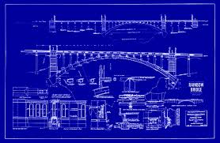

|
Info omkring broen Øresundsforbindelsen er en fast kombineret bro- og tunnelforbindelse indviet 1. juli 2000 mellem Danmark og Sverige (Amager og Skåne). Forbindelsen består af Øresundstunnelen mellem Amager (ved Kastrup syd for København) og den kunstige ø Peberholm (syd for Saltholm) samt Øresundsbroen, en kombineret bjælkebro og skråstagsbro mellem Peberholm og Lernacken syd for Malmø. Forbindelsen består af en motorvej og et dobbelt jernbanespor. Forbindelsens længde er 15,9 km. I 1936 blev en Øresundsbro med jernbane, vej og cykelsti designet af bl.a Kampsax og Højgaard & Schultz til en formodet pris på 152 mio. kr. Øresundsbro Konsortiet anvender selv det registrede varemærke Øresundsbron, et hybridnavn, der kombinerer det danske ø med den svenske stavning bron (broen). Det skal symbolisere den fælles dansk-svenske forbindelse. I officiel retskrivning og i dansk hverdagssprog er det korrekte navn Øresundsbroen. Da der er tale om en kombineret tunnel og bro, bruges også betegnelsen Øresundsforbindelsen. Øresundstunnelen eller Drogdentunnelen udgør den vestlige del af Øresundsforbindelsen mellem Amager og den kunstige ø Peberholm. Den er 4.050 m lang og består af en 3.510 m lang sænketunnel under Drogden og to portalbygninger på hver 270 m. Tunnelen er udført med to jernbanerør, to motorvejsrør og et service- og flugtvejsrør. Den er bygget af 20 elementer á 176m × 38,8m × 8,6m, vejer 55.000 ton, og er de største præfabrikerede tunnelelementer i verden. Broen er tegnet af arkitekt MAA Georg K. S. Rotne. Selve brokonstruktionen er en 7,85 km lang skråstagsbro, en type som Farøbroen. Broen strækker sig fra tunnelens opkørsel på den 4,05 km lange kunstige ø Peberholm lidt syd for øen Saltholm og til Lernacken lidt syd for Malmø. 2,5 km af selve broen ligger i Danmark, mens 5,35 km er i Sverige. Spandet uden bropiller er med 490 m løsthængende bro med 57 m mellem vej og havoverflade en af verdens største. De højeste bropiller rager 203,5 m op over Øresund. Selv om det meste af skibstrafikken i det meget trafikerede Øresund går hen over Drogden-strædet, hvorunder tunnelen løber, er det alligevel muligt for endog meget store skibe at passere under selve broen. Tunnelkonstruktionen er 4.050 m lang, hvoraf 3.510 m er decideret tunnel, mens der i hver tilkørselsende er 270 m tunnelnedkørsel. Tunnelen består af fire separate rør; i tunnelen løber jernbanen i samme niveau som vejene, mens de to jernbanespor løber under de fire vejspor på broen. Broen er lettere buet primært af æstetiske årsager. Der kørte i gennemsnit ca. 17.000 køretøjer over broen i døgnet i det første halvår af 2007, hvilket er en stigning på 19 procent fra 2006. Antallet af togpassagerer voksede fra 2006 til 2007 med 25 procent til 9,8 millioner togpassagerer. I 2012 var dette tal steget næsten 11 mio. Fjerntog og Øresundstog bruger forbindelsen. I 2007 foreslog den svenske trafikforsker Anders Olshov, at man bør overveje en udvidelse af Øresundsbroen eller at bygge endnu en bro mellem Danmark og Sverige (Helsingborg-Helsingør), idet prognoser viser, at broens kapacitet inden for en 10-årig tidshorisont vil være utilstrækkelig. Iflg. Øresundsbro Konsortiet er der allerede fra 2012 risiko for køer mellem kl. 8 og 9 om morgenen for trafikken fra Sverige til København. Når Femern Bælt-forbindelsen står færdig, dog tidligst i 2026, forventer trafikforsker Alex Landex, at en ny Øresundstunnel mellem Helsingør og Helsingborg kan komme på tegnebrættet. Han begrunder det især med, at kapaciteten til tog i myldretiden vil blive for lille. I 2012 havde Alex Landex' udtalelser vist sig at holde stik, idet godstrafikken over Øresund var blevet en flaskehals. Dette betyder yderligere at Danmark får sværere ved at leve op til sine visioner om mere miljøvenlig transport, da godstog forurener mindre end lastbiler. |
|---|
|  |